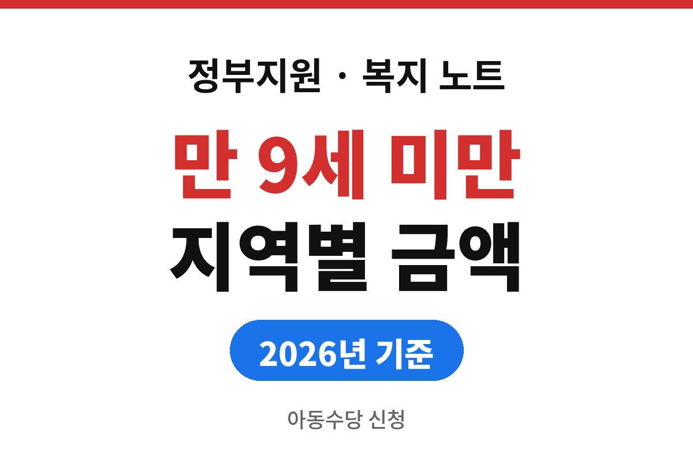
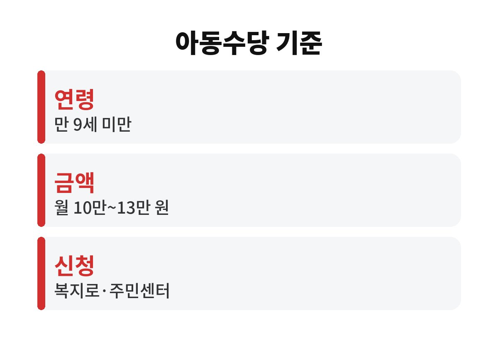
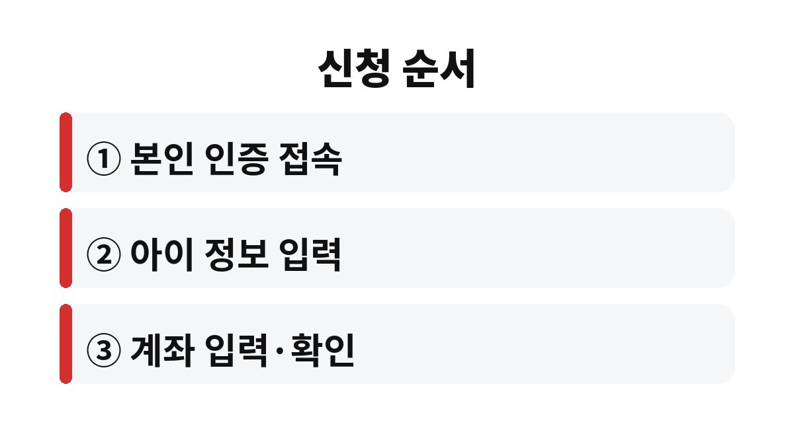

아동수당은 2026년 기준 만 9세 미만 아동을 키우는 가정이 받는 현금 지원이고, 지급액은 사는 지역에 따라 월 10만 원에서 13만 원까지 갈린다.
대상 연령이 넓어지면서 이미 받던 집과 새로 대상이 된 집이 섞여 있다.
신청이 필요한 경우와 자동으로 이어지는 경우를 구분해 두면 지급이 빠지는 일을 막을 수 있다.
아동수당은 만 9세 미만 아동이 있는 가구에 매월 지급되는 수당이다.
2026년부터 대상 연령이 넓어졌다는 점이 달라진 부분이다.
아동 한 명마다 받는 돈이라 자녀가 둘이면 두 사람 몫을 각각 신청한다.
연령 기준은 생일에 따라 계산하기 때문에 만 나이로 따져야 한다.
예를 들어 올해 여덟 살이 된 아이는 대상이지만, 생일이 지나 만 9세가 되는 달부터는 지급이 끝난다.
언제까지 받는지 궁금할 때는 아이의 생일을 기준으로 마지막 지급 달을 확인한다.
자녀가 여럿인 집은 아이마다 생일이 달라 지급이 끝나는 시점도 제각각이다.
한 아이가 대상에서 빠져도 동생은 계속 받으므로 아이별로 지급 상태를 따로 본다.
보호자가 바뀌거나 아이와 함께 사는 사람이 달라진 경우에도 신청 정보는 새로 맞춰야 한다.
지급액은 기본 월 10만 원이고, 지역에 따라 최대 월 13만 원까지 올라간다.
같은 아이라도 주소지가 어디인지에 따라 받는 금액이 달라지는 구조다.
내 지역이 몇 만 원 구간인지는 시군구별로 나뉘어 있어 글 하나로 단정할 수 없다.
이 부분은 보건복지부 안내와 복지로 화면에서 주소를 넣어 확인하는 편이 정확하다.
고지서에 적힌 주소와 주민등록 주소가 다른 집이라면 어느 쪽이 기준인지부터 따진다.
수당의 지역 구간은 주민등록상 거주지를 바탕으로 판단하는 것이 일반적이다.
이사를 앞두고 있다면 전입 날짜가 지급액에 영향을 줄 수 있어 미리 문의해 둔다.
| 확인 항목 | 기준 | 어디서 확인하나 |
|---|---|---|
| 지급 연령 | 만 9세 미만 | 복지로·보건복지부 |
| 지급 금액 | 월 10만~13만 원(지역별) | 보건복지부 안내 |
| 신청 장소 | 복지로·정부24·주민센터 | 관할 주민센터 |
| 지급 방식 | 신청 후 지정 계좌로 입금 | 신청 화면 안내 |

온라인 신청은 복지로 누리집이나 앱, 정부24에서 한다.
직접 가려면 아이가 주민등록된 주소지의 주민센터를 찾는다.
어느 쪽이든 아이와 보호자의 정보, 받을 계좌를 입력하는 흐름은 같다.
신청서에는 보호자 이름과 아이의 주민등록번호, 연락처를 넣는 칸이 나온다.
계좌는 신청 화면이 안내하는 명의 기준에 맞춰 입력해야 오류가 나지 않는다.
접수가 끝나면 지급 대상 확정 여부가 문자나 신청 내역으로 확인된다.

이미 받는 아이는 연령이 넓어졌다고 다시 신청하지 않는 경우가 많다.
다만 이사로 주소가 바뀌었거나 계좌가 달라졌다면 변경 신고가 필요할 수 있다.
내 경우가 해당하는지는 주민센터에 전화로 묻는 편이 빠르다.
신청이 늦어지면 지급이 시작되는 달이 뒤로 밀릴 수 있다.
소급해서 받을 수 있는 기간은 공식 공고에서 정한 기준을 따른다.
출생 직후에는 다른 신청과 함께 서둘러 처리해 두는 것이 낫다.
해외에 오래 머무는 경우에도 지급이 달라질 수 있다.
장기간 출국하면 지급이 정지되는 규정이 있는지 공식 안내에서 확인한다.
아이를 시설이나 다른 보호자가 돌보는 상황이라면 수령 대상이 누구인지도 따로 묻는다.
지금 당장 할 일은 아이의 만 나이와 주소지를 확인하는 것이다.
그다음 복지로에서 우리 지역 금액 구간을 조회하면 된다.
수급 중인 정보가 맞는지는 신청 내역에서 한 번 열어 보면 알 수 있다.
지급 중단 문자가 오면 방치하지 말고 바로 주민센터에 이유를 묻는다.
참고 자료: 보건복지부 「아동수당 지급 안내」(2026년 11월 확인)
※ 2026년 11월 기준 공개된 정보를 정리한 글이며, 정확한 대상 요건·금액·신청 기간은 복지로·정부24·관할 주민센터의 공식 공고를 확인하길 바란다.